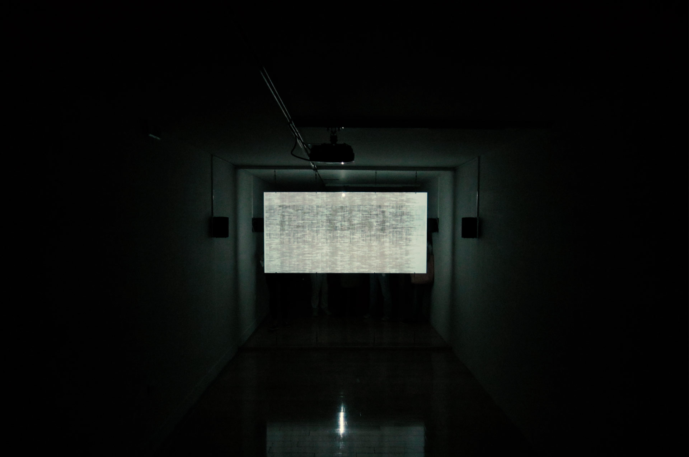
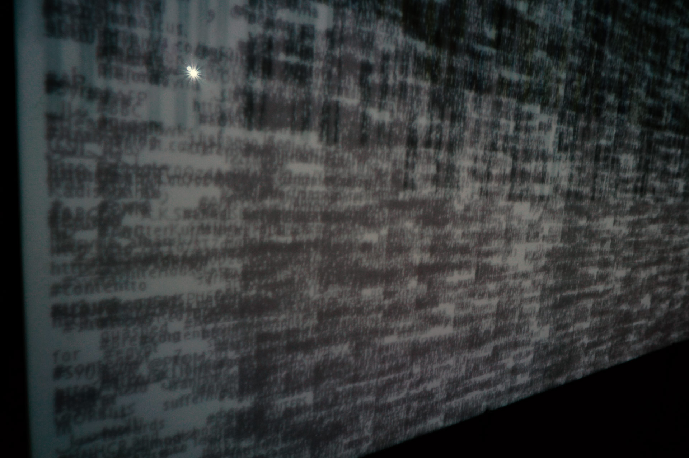
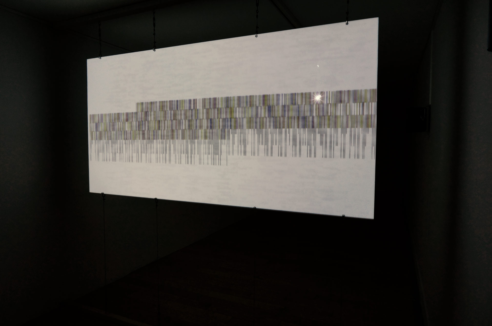

internet noise as a structure
The installation “Internet Noise as a Structure” is the sonic and visual realisation of Flusser’s views on the notion of home. It examines how incoming noise can a ect the cycle of aesthetics. Social Media, while playing a part in the rede nition of the notion of home, is also creating a continuous ow of incoming noise. No part of this noise however can turn into information if there is no subjective intervention. As a system programmed to perform a series of tasks, “Internet Noise as a Structure” acts as an imaginary boarder based on the Twitter platform.
Aggregating data from di erent hashtag [#] feeds, it produces sound events, based on an algorithm which can estimate the number of the letters of every incoming word as well as the total volume of the incoming data. The relation between the two above elements, a ects the frequency and the phase of di erent waveforms, all ending up modulating the phase of a single sine wave. Each time the incoming word is matching to a library’s preset keywords, the modulation amount changes, whereas at the same time, the incoming words are transferred into the binary system and projected. The installation supplies the internet with noise, by constantly and automatically posting various tweets. The tweets have to do, on one hand with technical and conceptual characteristics of the installation and on the other hand, with events that happened during the time of its creation.
2013
In collaboration with Timos Alexandropoulos
A/V Installation | stereo sound | 2 x ch projection
data collection from Twitter in real time
semi-transparent plexi glass

Internet Noise as a Structure - Installation/Benaki Museum - 2013
Internet Noise as a Structure - Installation/Benaki Museum - 2013

Internet Noise as a Structure - Installation/Benaki Museum - 2013

Internet Noise as a Structure - Installation/Benaki Museum - 2013

Internet Noise as a Structure - Installation/Benaki Museum - 2013

Internet Noise as a Structure - Installation/Benaki Museum - 2013

Internet Noise as a Structure - Installation/Benaki Museum - 2013

Internet Noise as a Structure - Installation/Benaki Museum - 2013